Siril guide
StarNet++ is an extremely convenient and useful thing, however, in its original form, it uses only the CPU and is very slow. For regular images that have not been drizzled, waiting a minute is most likely not a big problem. However, if you need to process a comet, or a full frame 3x drizzled image, the time can increase by orders of magnitude.
As a test of the speed of StarNet++ I will use an image with a resolution of 11072x7392:
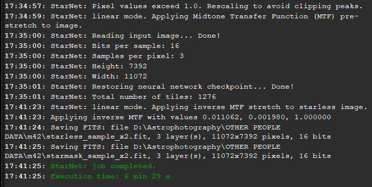
6 minutes and 29 seconds. Long enough. What about resource consumption?
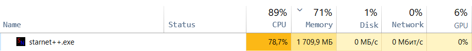
Almost 80% of CPU usage on AMD 5 5600H.
It becomes obvious that it takes a lot of time to process large images and the CPU is highly loaded.
Since StarNet++ is a neural network in which many matrix calculations need to be performed, they can be
significantly accelerated using CUDA cores.
First of all, it's worth checking if your GPU supports
CUDA computing.
There is some possibility that the GPU is not on the list, but it supports CUDA.
Some googling will help.
The next step is to update the GPU drivers.
Installing the CUDA SDK:
The most important part is installing the necessary CUDA components from NVIDIA. For tensorflow
(the library in which StarNet++ is written) to work correctly,
CUDA version 11.2 is required.
Installing CUDA requires about 6 gigabytes of free space.
After running the installer and system check, an error may occur due to the fact that CUDA is already
installed.
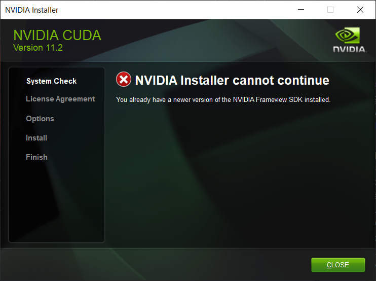
To fix this, you need to uninstall all applications related to CUDA through the Windows utility
"Add or remove programs":
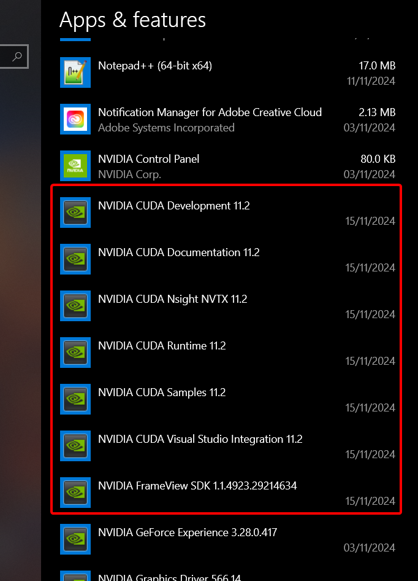

The next step is to select custom options:
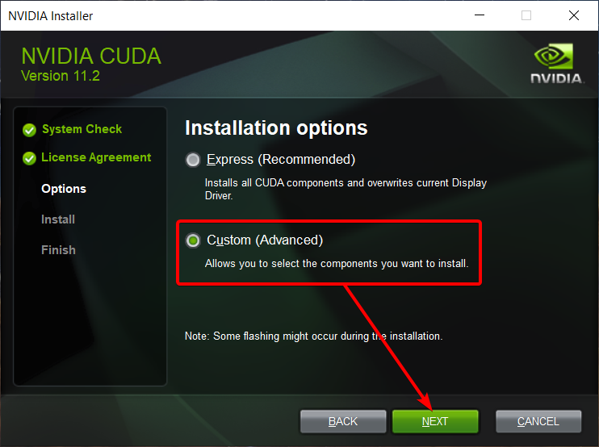
Uncheck these two parameters:
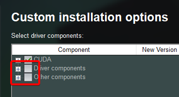
Sometimes an error may occur:
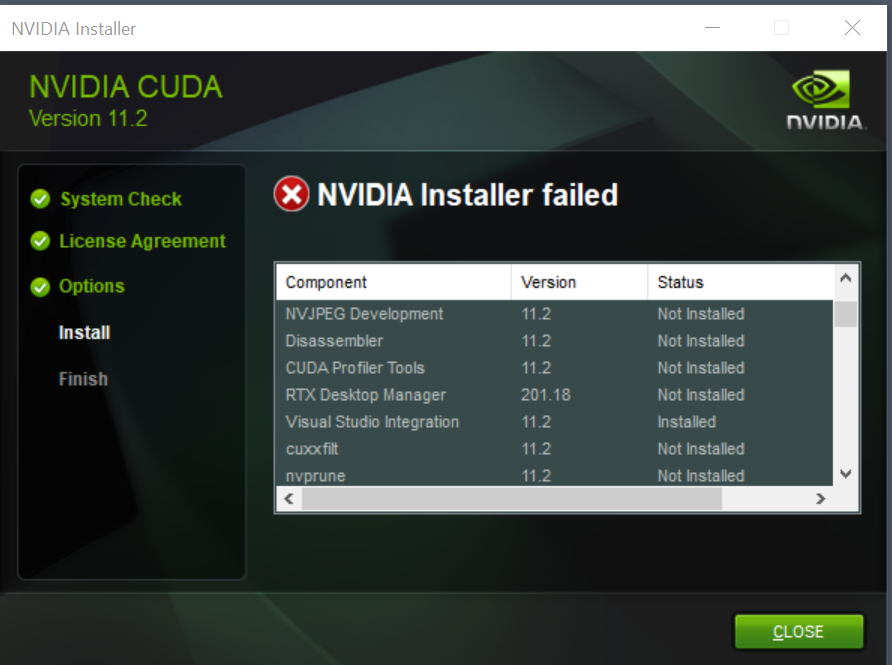
To fix it, go back to the installer and uncheck these parameters. To see them, you need to
click on CUDA dropdown:
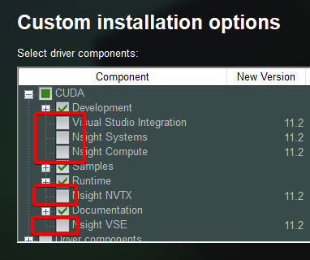
After that, CUDA should be installed successfully:
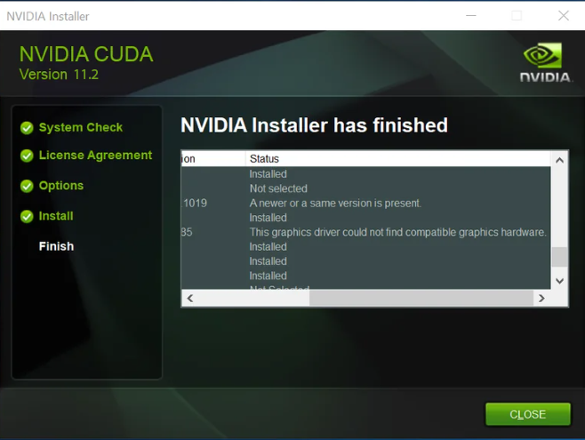
Adding libraries:
In order for CUDA to work with StarNet++, you need to add the appropriate libraries to the right
places.
You need to download the cuDNN 8.1 library. To do this, you need to register
an NVIDIA account, if you don't have one yet.
As well as tensorflow library, which supports GPU acceleration.
Now you need to open the environmental variables so that the system can use CUDA, as well as
for an additional flag.
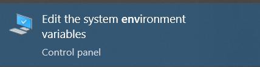
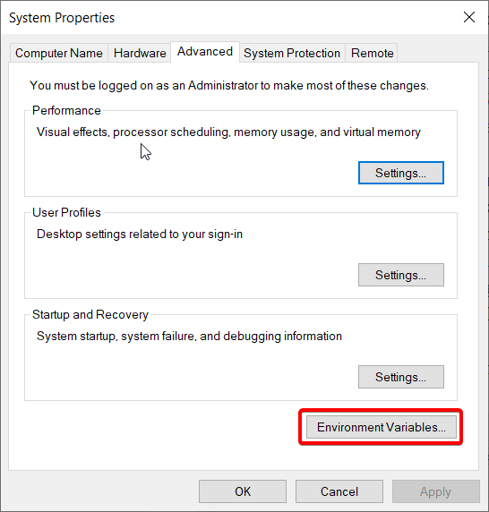
You need to check if CUDA has created its own variables:
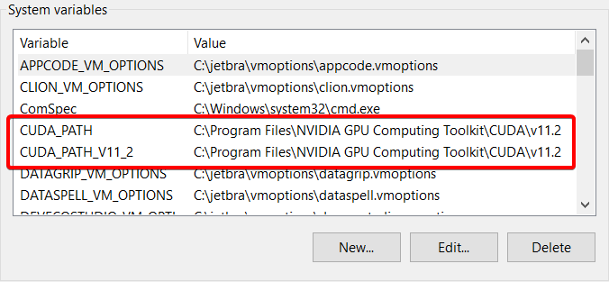
You also need to create a separate variable:
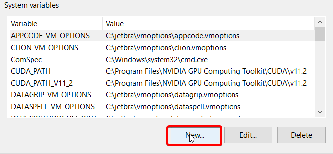
TF_FORCE_GPU_ALLOW_GROWTH with a variable value true
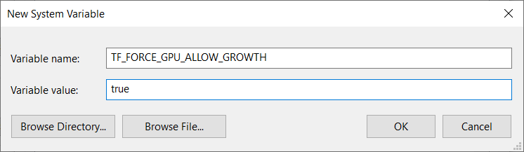
Be sure to press OK on each step!
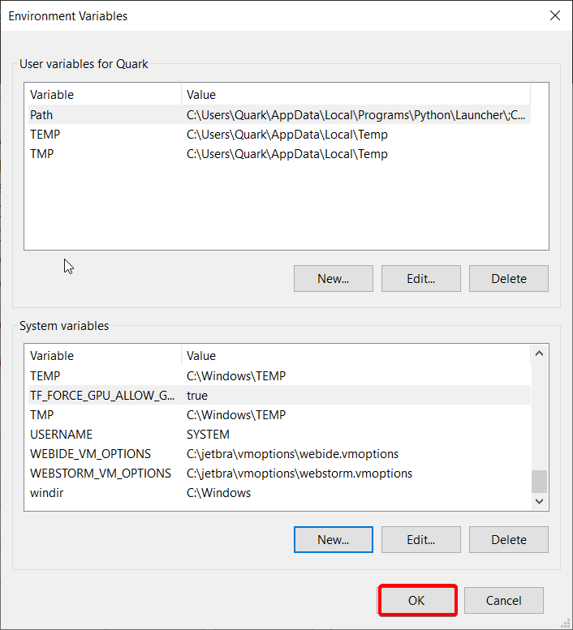
CUDA is located in C:\Program Files\NVIDIA GPU Computing Toolkit\CUDA\v11.2 folder
Copy libtensorflow\include\tensorflow folder to CUDA\v11.2\include folder
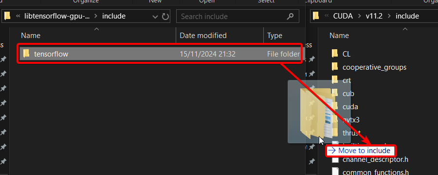
Copy libtensorflow\lib\tensorflow.lib file to CUDA\v11.2\lib folder
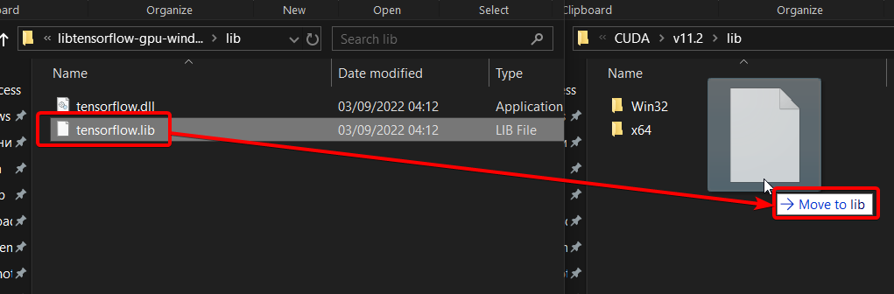
Copy all files from cudnn\cuda\bin folder to CUDA\v11.2\bin folder
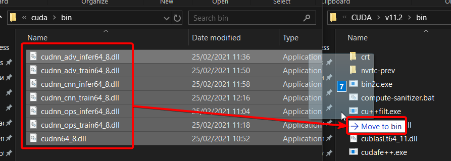
Copy all files from cudnn\cuda\include folder to CUDA\v11.2\include folder
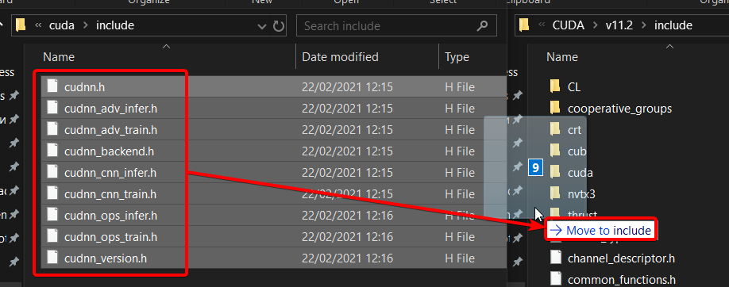
Replace starnet++_cli\tensorflow.dll with libtensorflow\lib\tensorflow.dll
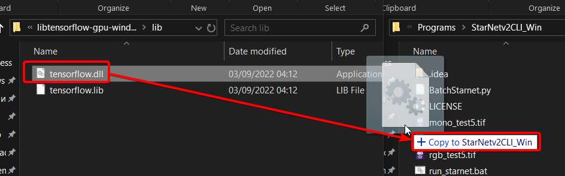
Restart the computer.
Has it produced any results? Definitely!
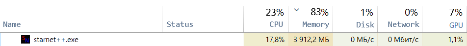
And also faster!
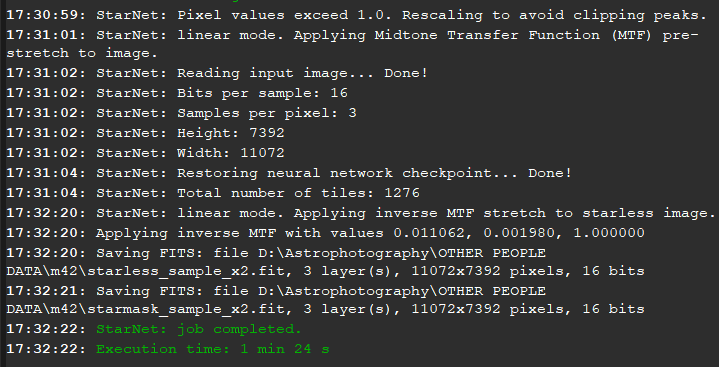